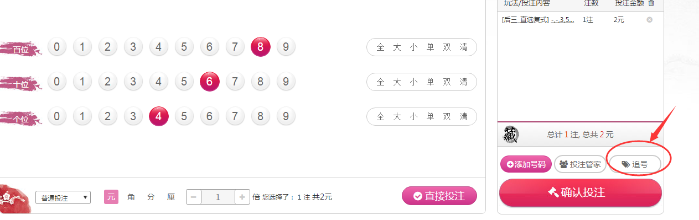
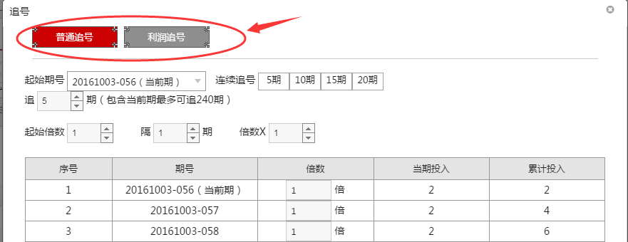
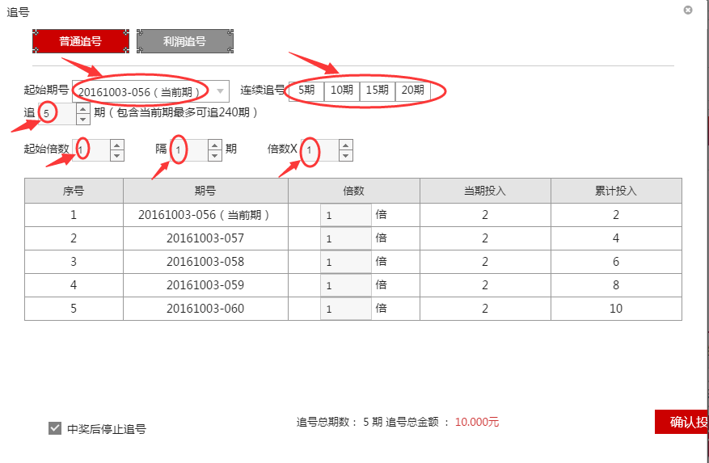
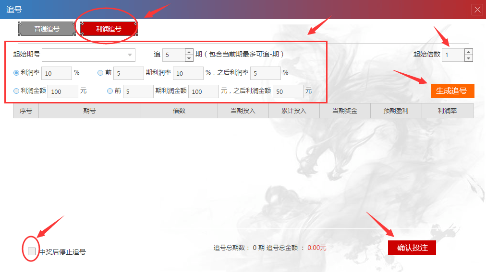
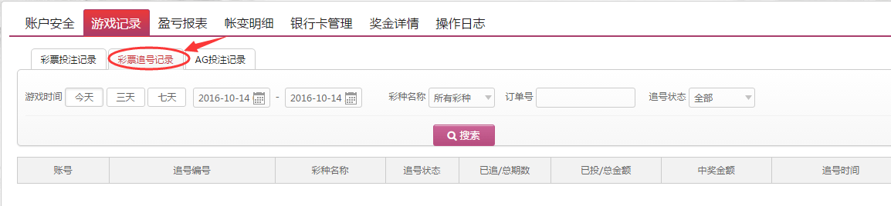

追号是指选定某些固定选号，在一定期数内进行连续投注的过程。以往在进行守号投注时，需要每天都投注一次，非常麻烦。如果某天因故未能购买，而错失中奖机会，将会令人抱憾不已。使用“追号”功能，只需一次操作即可自动完成多期投注，省时省力，还可自由选择“中奖后停止追号”大大的方便了平台用户投注。
追号的方法如下：
1、在投注某个彩种时，在添加号码以后选择页面右下角的“追号”标志，进入“追号”页面。

2、在“追号”页面，您可以选择“普通追号”或“利润追号”。

3、如果选择“普通追号”，那么请选择好追号的起始期号、要追的期数、起始倍数、隔几期追号以及追号的倍数，选择好以后点击“生成追号”，并且选择是否“中奖后停止追号”，确认所有的选择无误后，点击“确认投注”，即追号成功。

4、如果选择“利润追号”，那么请选择好追号的起始期号、要追的期数、利润率和利润金额、起始倍数，选择好以后点击“生成追号”，并且选择是否“中奖后停止追号”，确认所有的选择无误后，点击“确认投注”，即追号成功。

5、如果您想查询您的追号记录，请将鼠标指向导航栏的账户名位置，会自动下拉出一列子菜单，找到“游戏记录”，点击进去。
6、在游戏记录的页面里，点击选择“彩票追号记录”，您可以根据游戏时间、彩种名称、订单号和追号状态来搜索相应的追号记录。

同倍追号：同倍追号指设定追号期数和倍数之后，所有的期数的投注倍数都与设置倍数相同。
翻倍追号：翻倍追号需要设置隔*期翻*倍，点击立即生成，系统将立即生成为与设置一致的投注，点击投注即可成功。
盈利率追号：指追号计划中保证中奖的最低利润，例如，后三直选投012共一注1倍，我们设定如果中奖最低盈利不低于100%。选择起始倍数为1倍，共追号25期，点击生成之后，系统会为您计算投注倍数。您的总投注金额是50元。如果您追号中奖之后，您的盈利将不低于已投注总金额100%。